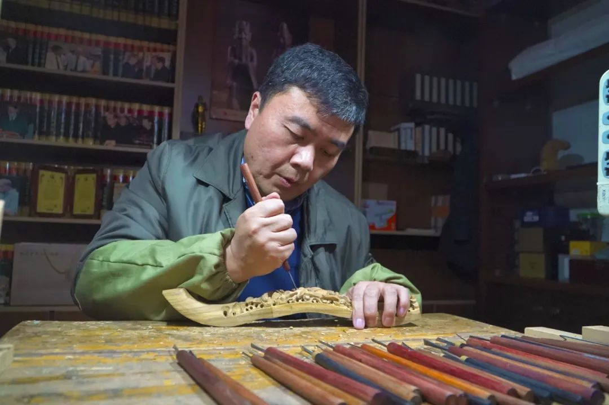
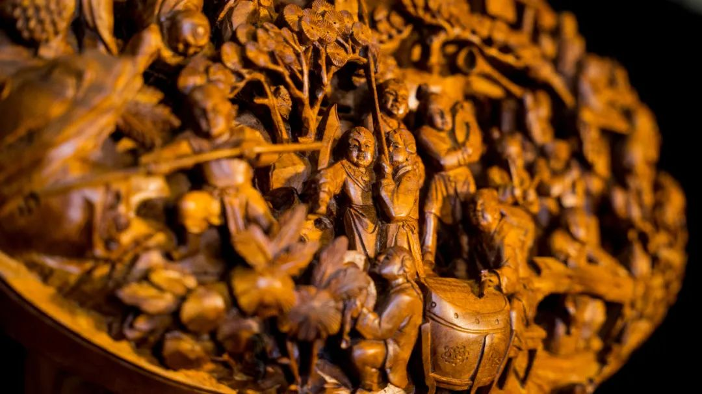
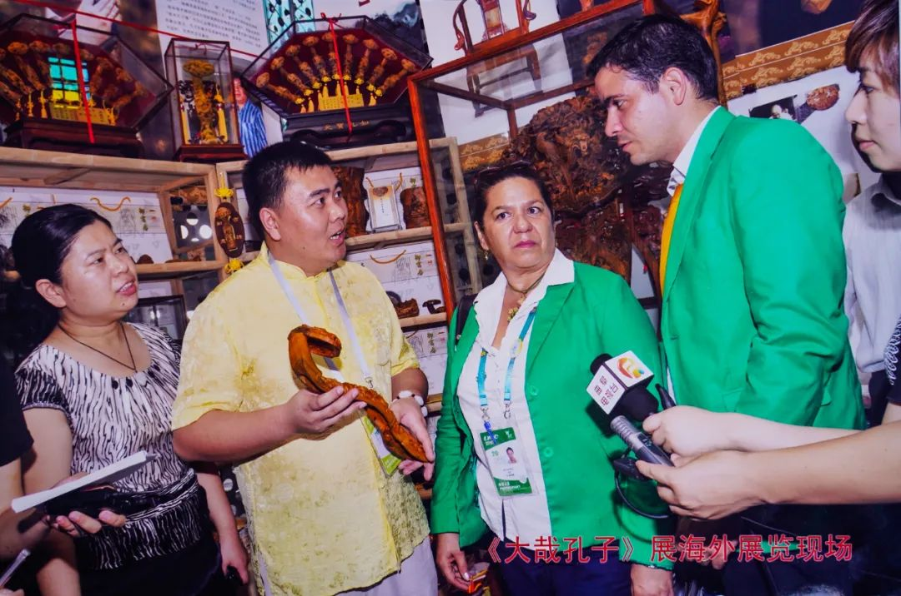

孔门楷雕第五代传承人孔繁彪：用心雕琢，用情传承
2023年01月15日09:05 来源：齐鲁壹点
八仙过海、百寿图、福禄寿……各种有着吉祥寓意的图案呈现在一方楷木之上，镂空且细致的雕琢，无不体现着创作者精妙的刀法。在曲阜，每逢婚嫁寿辰、升学升职、新店开张等吉庆时刻，楷雕如意总是最佳伴手礼。楷雕的起源发展与孔氏家族的兴盛有着不可分割的联系，由于楷雕工艺的用料——楷木的特殊性、局限性和其制作工艺的复杂性，楷雕一度成为孔氏家族向帝王朝贡或与达官贵人礼尚往来的首选，直到清后期才逐渐走入民间，被世人所了解。如今，在曲阜后作街，孔门楷雕第五代传承人孔繁彪师承祖业，开拓创新楷雕艺术的新意境，创建自成一体的楷雕艺术，形成独特鲜明的艺术风格。

师承祖业
老手艺焕发新生
孔繁彪出生楷雕世家，1982年，不到10岁的孔繁彪便跟随父亲学习楷木雕刻。“真正唤起我对楷雕的喜爱是源自于小学时期一次全国性的创作比赛，那时候我已经学了几年，便雕了一个作品参赛，没想到拿到了金奖。”回忆起小时候的事情，孔繁彪显得很开心，那次获奖让他燃起了执着楷雕创作的决心。
说起获奖，由于孔繁彪祖辈深耕楷雕领域，作品多次与各大奖项结缘，第三代传承人孔宪斌就曾凭借作品《百子如意》斩获法国巴黎“万国博览会”金奖，还于1959年作为民间艺人代表受邀参加新中国成立十周年观礼。
祖辈对这门手艺的全心贯注深刻影响了孔繁彪，“记得小时候，有天夜里我起床，看到爷爷还在工作台边细心雕琢一件孔子像。我那时候小，也不懂事，就问爷爷为何这么认真，爷爷告诉我，楷雕这门手艺是个细致活，用心雕琢，方能形神具备。”回忆起这件事情，孔繁彪的讲述仿佛勾勒出一个细致的场景，隐约中看到一颗匠人的种子被种在了孔繁彪的心里。在楷雕行里，一直有“人磨刀、刀磨人”的说法，就是要通过对楷雕工具、楷雕作品的打磨过程，锻炼雕刻者的耐性，提高雕刻者的专注度。在孔繁彪眼里，楷雕这门手艺本身就如一把刻刀，在雕琢人生。
曲阜万仞宫墙巍峨耸立，斑驳的墙面记录着古城沧桑变迁，也见证着曲阜工匠的世代传承。1835年，孔门楷雕当时的代表人物孔广义在曲阜城鼓楼门创立木雕专营店“义兴孔记文楷如意老店”，再到如今孔繁彪后作街设立的“御书房”，近190年孔门楷雕传承不断。如今，孔繁彪在自己也已累计收徒培训木雕艺术人才120余人，入室弟子5人均已出师获得真传，并在曲阜三孔景区附近开设门店，这一批孔门楷雕的第六代传人正在让这门古老的手艺焕发新的光彩。
南北融合
作品曾风靡一时
工欲善其事、必先利其器，楷雕工具是楷雕师傅们从事创作的最直接的助手和伴侣。在木雕的工艺制作过程中，雕刻刀具及其辅助工具起到十分重要的作用。看一个人的手艺，只需观察一下他的工具便能知晓，走进孔繁彪的工作室，几十把各式不同刀具排列在工作台上。“这只是我楷雕工具中很少主的一部分，由于我年少时曾南下学习过南方木雕的手法，工具种类上自然也比传统北方楷雕要多一些。”

17岁时，孔繁彪南下浙江、福建、广东等地游历学习，在继承传统的基础上改革创新，其楷雕作品既有北方的古朴简洁，又有线条流畅的写实主义特色，创建了自成一体的楷雕艺术，形成独特鲜明的艺术风格。“传统的楷雕，多采用浮雕技法，在材料表面下功夫，而南方的木雕作品，刀下得深，层次感更显丰富。”南下三年，孔繁彪认真跟着南方的木雕手艺人学习技法，将南北方雕刻艺术融会贯通，学成归来之后，孔繁彪的楷雕如意层次感丰富立体，通过综合运用圆雕、浮雕等多种技法，将古典人物的形态塑造得惟妙惟肖，其作品在当时的市场风靡一时。
除此之外，孔繁彪还长期致力于传统技艺的保护和弘扬，其作品深深扎根于儒学文化的沃土中，对黄河流域非物质文化遗产保护做出突出贡献。同时，积极推动曲阜优秀传统文化创造性转化、创新性发展，把现代和传统手法相融合为楷雕艺术注入新的活力。在曲阜传统楷雕艺术品种类别、题材内容的基础上改革创新，先后新开发出了百福百寿、福禄寿、八仙庆寿等上百种蕴含传统吉祥文化寓意的楷雕如意，以及不同材质的孔子雕像、孔子圣迹屏风等300多个新的雕刻工艺品。古老的曲阜楷雕艺术不断充实丰富和提高，与现代生产生活深度融合。

2010年上海世博会期间，孔繁彪应上海世博局邀请在世博园宝钢大舞台开设“孔门楷雕馆”，并设立“大师课堂”驻场传习。这是继楷雕艺人孔宪斌当年凭《百子如意》斩获得巴黎“万国博览会”金奖110年之后，孔门楷雕再次结缘世博。孔繁彪还多次赴新加坡、马来西亚、韩国及港澳台等国家和地区举办艺术展，并举办现场授课及艺术交流。